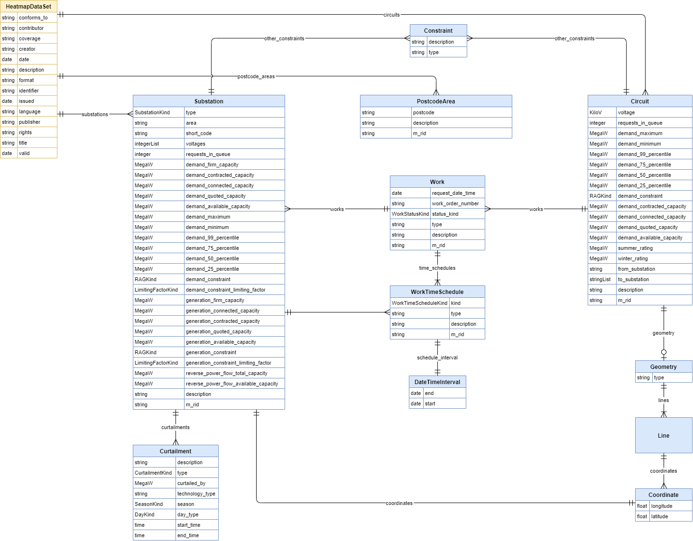

Information model for the NBNL-capaciteitskaart.
The capacity heatmaps information model was defined to cover a superset of data exchanged by the NL system operators. A minimum set of data is defined that all operators are expected to conform to, along with a number of optional properties and data types.

The data is intended to be presented as a hierarchy with a HeatmapDataSet at its root, then Substations and Circuits nested inside the HeatmapDataSet. Substations and Ciruits then have their own child elements forming a tree of data with the HeatmapDataSet at the root.
This information model is based in part on the LTDS Capacity Heatmap Information Model, which itself is published under the Open Government License, under ©Crown copyright 2024.
Additional schemas
Identifiers
URI: http://data.netbeheernederland.nl/capaciteitskaart/v1.0.0
Name: im-capaciteitskaart
Classes
| Class | Description |
|---|---|
| BaseWork | Common representation for work and work tasks |
| Circuit | A circuit representing a connection between substations |
| ConductingEquipment | The parts of the AC power system that are designed to carry current or that a... |
| ConnectivityNodeContainer | A base class for all objects that may contain connectivity nodes or topologic... |
| Constraint | An additional constraint/restriction on the Substation or Circuit |
| Coordinate | A coordinate of latitude/longitude |
| Curtailment | Curtailment of demand or generation capacity at the substation with optional ... |
| DateTimeInterval | Interval between two date and time points, where the interval includes the st... |
| Demand | Represents an individual or aggregated demand at the substation |
| Document | Parent class for different groupings of information collected and managed as ... |
| Equipment | The parts of a power system that are physical devices, electronic or mechanic... |
| EquipmentContainer | A modelling construct to provide a root class for containing equipment |
| Generator | Represents an individual or aggregated generator at the substation |
| Geometry | The geometry of the line, this will be one or more Lines i |
| HeatmapDataSet | A single instance of a published dataset |
| IdentifiedObject | This is a root class to provide common identification for all classes needing... |
| Line | A series of coordinates |
| Name | The Name class provides the means to define any number of human readable name... |
| NameType | Type of name |
| NameTypeAuthority | Authority responsible for creation and management of names of a given type; t... |
| PostcodeArea | A geographic region that is defined by the initial letters or digits of a pos... |
| PowerSystemResource | A power system resource (PSR) can be an item of equipment such as a switch, a... |
| Storage | Represents an individual or aggregated storage at the substation |
| Substation | A Substation with connect demand, generation or storage |
| TimeSchedule | Description of anything that changes through time |
| Work | Document used to request, initiate, track and record work |
| WorkTimeSchedule | Time schedule specific to work |
Slots
| Slot | Description |
|---|---|
| aggregate | True if the demand represents an aggregation of multiple demands all connecte... |
| area | The name of the license area |
| circuits | A list of circuits with heatmap data |
| conforms_to | ID for the schema used to create the instance data |
| contributor | An entity responsible for making contributions to the resource |
| coordinates | The longitude/latitude value of the substation as a single latitude/longitude... |
| coverage | The spatial or temporal topic of the resource, spatial applicability of the r... |
| creator | An entity responsible for making the resource |
| curtailed_by | The amount the demand/generation capacity (in MW) is curtailed by |
| curtailments | Curtailments at the Substation |
| date | A point of time associated with an event in the lifecycle of the resource |
| day_type | The type of day the curtailment applies during (weekday or weekend) |
| demand_25_percentile | The 25th percentile of demanding (in MW) at the substation |
| demand_50_percentile | The 50th percentile of demanding (in MW) at the substation |
| demand_75_percentile | The 75th percentile of demanding (in MW) at the substation |
| demand_99_percentile | The 99th percentile of demanding (in MW) at the substation |
| demand_available_capacity | The available demand capacity (in MW) at the substation |
| demand_connected_capacity | Sum of all demand (in MW) currently connected at the substation |
| demand_constraint | A RAG definition of the demand constraints at the substation |
| demand_constraint_limiting_factor | The limiting factor for demand constraints, either thermal, voltage or fault ... |
| demand_contracted_capacity | Sum of all demand (in MW) currently contracted at the substation which is not... |
| demand_firm_capacity | The firm capacity (in MW) for demand at the substation |
| demand_maximum | The maximum demand (in MW) at the substation |
| demand_minimum | The minimum demand (in MW) at the substation |
| demand_quoted_capacity | Sum of all demand (in MW) currently quoted at the substation excluding contra... |
| demands | The demands at the station covering connected, contracted and quoted |
| description | An account of the resource |
| end | End date and time of this interval |
| end_time | The end time of a curtailment (exclusive) |
| format | The file format of the resource |
| from_substation | mRID of the Substation the Circuit is from (used where CIM data is being prod... |
| generation_available_capacity | Available generation capacity (in MW) at the substation |
| generation_connected_capacity | Sum of all generation (in MW) currently connected at the substation |
| generation_constraint | A RAG definition of the demand constraints at the substation |
| generation_constraint_limiting_factor | The limiting factor for generation constraints, either thermal or fault level... |
| generation_contracted_capacity | Sum of all generation (in MW) currently contracted at the substation which is... |
| generation_firm_capacity | The total firm generation capacity (in MW) of the substation |
| generation_quoted_capacity | Sum of all currently quoted generation (in MW) at the substation excluding an... |
| generators | The generators at the station covering connected, contracted and quoted |
| geometry | The geometry of the substation |
| identifier | An unambiguous reference to the resource within a given context |
| issued | Date of formal issuance of the resource |
| kind | Kind of this work schedule |
| language | A language of the resource |
| latitude | The latitude value of the coordinate as a single latitude/longitude point |
| lines | The Line elements |
| longitude | The longitude value of the coordinate as a single latitude/longitude point |
| m_rid | Master resource identifier issued by a model authority |
| name_type | Type of this name |
| name_type_authority | Authority responsible for managing names of this type |
| names | All names of this identified object |
| other_constraints | An additional constraint on the Substation |
| postcode | Identifier for the postcode area |
| postcode_areas | Postcode Areas associated with the heatmap data |
| publisher | An entity responsible for making the resource available |
| request_date_time | Date and time work was requested |
| requests_in_queue | Number of requests for new grid connections and capacity increases in queue |
| reverse_power_flow_available_capacity | The available reverse capacity (in MW) for the substation from lower to highe... |
| reverse_power_flow_total_capacity | The reverse capacity (in MW) for the substation from lower to higher voltage ... |
| rights | Information about rights held in and over the resource |
| schedule_interval | Schedule date and time interval |
| season | The season this curtailment applies during |
| short_code | Short code name for substation (alphanumeric, uppercase letters only) |
| start | Start date and time of this interval |
| start_time | The start time of a curtailment (inclusive) |
| status_kind | Kind of work status |
| storage | The storage devices at the station covering connected, contracted and quoted |
| substations | A list of substations with heatmap data |
| summer_rating | Summer rating (in MW) for minimum rated section in the circuit (i |
| technology_type | The technology the connected generation e |
| time_schedules | All time schedules for this work or work task |
| title | A name given to the resource |
| to_substation | mRID of the Substations the Circuit is to (optional if LV circuits are shown ... |
| type | The type of the substation |
| valid | A date range for the validity of a resource |
| voltage | Voltage (in kV) of the circuit |
| voltages | The voltages at the Substation in Kilovolts (kV) |
| winter_rating | Winter rating (in MW) for minimum rated section in the circuit (i |
| work_order_number | Work order number (or other unique identifying information) for this work |
| works | All the works performed for this substation |
Enumerations
| Enumeration | Description |
|---|---|
| CurtailmentKind | The type of curtailment |
| DayKind | The type of day the curtailment applies during (weekday or weekend) |
| LimitingFactorKind | The limiting factor for demand/generation constraints |
| RAGKind | Traffic light colors coding scheme for categorising status |
| SeasonKind | The season this curtailment applies during |
| SubstationKind | Type of substation |
| WorkStatusKind | Kind of status, specific to work |
| WorkTimeScheduleKind | Kind of work schedule |
Types
| Type | Description |
|---|---|
| Boolean | A binary (true or false) value |
| Curie | a compact URI |
| Date | a date (year, month and day) in an idealized calendar |
| DateOrDatetime | Either a date or a datetime |
| Datetime | The combination of a date and time |
| Decimal | A real number with arbitrary precision that conforms to the xsd:decimal speci... |
| Double | A real number that conforms to the xsd:double specification |
| Float | A real number that conforms to the xsd:float specification |
| Integer | An integer |
| Jsonpath | A string encoding a JSON Path |
| Jsonpointer | A string encoding a JSON Pointer |
| KiloA | |
| KiloV | |
| MegaW | |
| Ncname | Prefix part of CURIE |
| Nodeidentifier | A URI, CURIE or BNODE that represents a node in a model |
| Objectidentifier | A URI or CURIE that represents an object in the model |
| Sparqlpath | A string encoding a SPARQL Property Path |
| String | A character string |
| Time | A time object represents a (local) time of day, independent of any particular... |
| Uri | a complete URI |
| Uriorcurie | a URI or a CURIE |
Subsets
| Subset | Description |
|---|---|